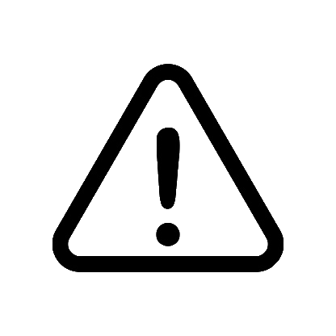
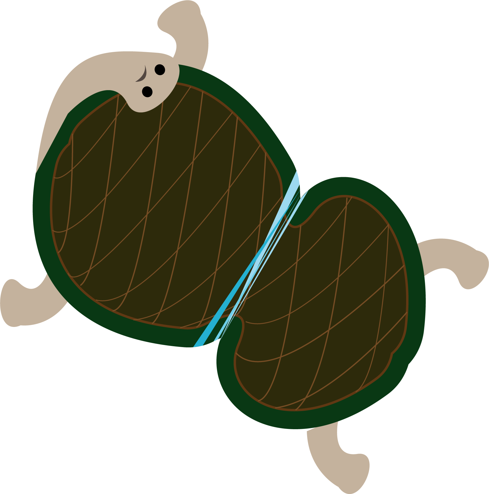

Plastic
Island
태평양 거대 쓰레기섬
해양동물의 운명

태평양 거대 쓰레기 지대는 각각 하와이 섬 북동쪽으로
Video
Plastic island를 아시나요?
태평양 거대 쓰레기 지대는 각각 하와이 섬 북동쪽으로
1,600km떨어진 쓰레기섬과 일본과 하와이 섬 사이에
있는 태평양을 떠다니는 두 개의 거대한 쓰레기 더미를
일컫는 말입니다.
플라스틱아일랜드를 쓰레기 섬이라 부르기도 하는데요
실제로 그 크기가 웬만한 작은 규모의 섬들보다 크다고 합니다.
Video

바다거북의 운명
바다거북을 아시나요?
바다거북은 해수면과 바닥을 오가며 물에 떠다니는 해파리나 해초를 주로 먹고 삽니다.
이런 먹이습성 때문에 물에 떠다니는 비닐, 낚싯줄, 노끈 등의 쓰레기를 먹이로 착각하고 삼키게 되는 것이죠.
이런 쓰레기들을 먹으면 소화활동에 지장을 주고 심한 경우 장을 막아 폐사에 이르게 합니다.
새들은 바다에 떠다니는 다양한 플라스틱 쓰레기들을 먹이로 착각하여 먹고는 합니다.
이런 먹이습성으로 인해 비닐, 빨대, 다양한 플라스틱 쓰레기들이 몸 속으로 들어가거나 심한경우 비닐이 부리에 감기는 상황들이 발생 합니다.